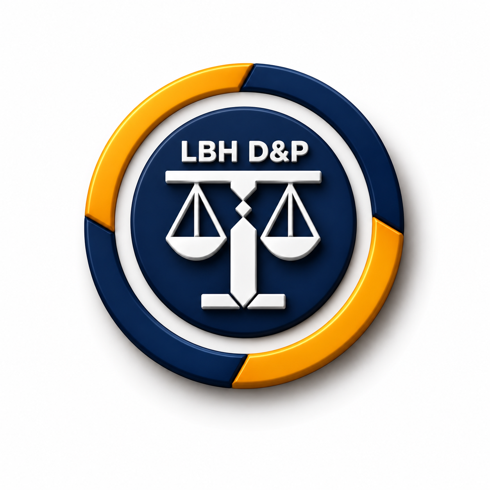

Lembaga Bantuan Hukum terdepan di Indonesia yang berfokus pada pendampingan legalitas yayasan, penyelesaian sengketa tanah wakaf, serta perlindungan hukum bagi para ustaz dan tenaga pendidik swasta.
Dirancang khusus menjawab tantangan legalitas institusi pendidikan Islam swasta, keamanan aset wakaf, serta perlindungan profesi pendidik.
Layanan respons cepat tanpa biaya untuk konsultasi legalitas, tata kelola, dan isu hukum mendesak pada yayasan maupun lembaga non-profit dakwah.
Bimbingan penuh proses legalitas pendirian yayasan dakwah/pendidikan, dari akta notaris, pengesahan Kemenkumham, hingga sertifikasi aset wakaf.
Pendampingan dan penanganan hukum di persidangan (pidana maupun perdata) khusus sengketa terkait kegiatan dakwah, persekolahan, dan pesantren.
Advokasi hak-hak hukum bagi para ustaz, guru madrasah, dan tenaga pendidik di sekolah swasta dan pondok pesantren agar mengajar aman dan bermartabat.
Transparan, terstruktur, dan terpantau dengan sistem nomor tiket konsultasi.
Isi kronologi kasus atau hubungi Hotline 24 Jam. Sistem langsung menerbitkan Nomor Tiket Konsultasi resmi.
Advokat Divisi Litigasi atau Non-Litigasi menganalisis fakta hukum, dasar perundang-undangan, dan bukti dokumen.
Pemberian legal opinion, draft somasi/jawaban, mediasi musyawarah, atau surat rekomendasi perlindungan profesi.
Bila diperlukan, tim advokat resmi bertindak sebagai kuasa hukum di pengadilan negeri atau agama.
LBH D&P adalah lembaga bantuan hukum yang berfokus pada pendampingan, perlindungan, dan edukasi hukum di bidang dakwah serta pendidikan Islam. Kami berkomitmen menjaga keberlangsungan lembaga pendidikan, melindungi hak-hak tenaga pendidik, serta memastikan tata kelola yayasan berjalan sesuai aturan hukum yang berlaku di Indonesia.
"Menjadi pusat bantuan hukum yang terdepan, terpercaya, dan profesional dalam mengawal institusi pendidikan Islam, yayasan dakwah, serta para pengajar di Indonesia."
Memberikan perlindungan dan kepastian hukum bagi ustaz, guru, dan tenaga pendidik swasta di seluruh Indonesia.
Membantu legalitas dan penyelesaian potensi sengketa hukum di lingkungan yayasan serta lembaga pendidikan Islam.
Mengadvokasi dan mendampingi perkara hukum yang berhubungan langsung dengan aktivitas dakwah dan persekolahan/pesantren.
Setiap advokasi, telaah hukum, dan pendampingan perkara berpegang teguh pada tiga pilar utama:
Menjaga kepercayaan publik dan klien dengan profesionalisme serta integritas tinggi sesuai kode etik advokat dan moralitas Islam.
Memastikan para ustaz, pengajar, dan pengelola yayasan mendapatkan perlakuan dan hak hukum yang setara tanpa diskriminasi.
Bebas dari intervensi pihak luar dalam mengadvokasi isu-isu dakwah, menjaga muruah pendidikan, dan membela kebenaran.
Dipimpin oleh para purnawirawan perwira tinggi TNI-Polri dan praktisi hukum senior berintegritas tinggi.
Purnawirawan Perwira Tinggi Tentara Nasional Indonesia dengan kepakaran di bidang hukum militer dan ketahanan nasional. Berkomitmen mengayomi keberlangsungan institusi dakwah dan pendidikan Islam di Indonesia.
Purnawirawan Laksamana Muda TNI dengan pengalaman kepemimpinan strategis maritim dan tata kelola organisasi kebangsaan, aktif memperkuat kedaulatan moral generasi penerus bangsa melalui institusi pendidikan.
Praktisi dan tokoh hukum senior yang memiliki rekam jejak panjang dalam pembinaan kelembagaan yayasan sosial keagamaan dan advokasi kemaslahatan umat.
Purnawirawan Perwira Tinggi Kepolisian Negara Republik Indonesia yang ahli dalam penegakan hukum berkeadilan, mediasi strategis, dan perlindungan ketertiban masyarakat di bidang pendidikan.
Para advokat tersumpah, mediator bersertifikat, dan pakar hukum kepatuhan kerja di bidang pendidikan Islam.
Advokat, praktisi hukum pendidikan Islam, dan mediator bersertifikat dengan sertifikasi keahlian advokasi ketenagakerjaan dan hukum yayasan. Memimpin operasional strategis dan pengawalan kasus LBH D&P di seluruh Indonesia.
Advokat spesialis litigasi peradilan umum, pidana, dan perdata dengan penguasaan mendalam atas pembelaan tinggi persidangan dan kasus dakwah, sengketa lahan yayasan, dan sengketa ketenagakerjaan.
Pakar hukum perancangan kontrak, audit kepatuhan yayasan, mediasi sengketa internal, dan restrukturisasi legalitas lembaga pendidikan.
Kumpulan fatwa dan telaah hukum praktis seputar legalitas yayasan, perlindungan guru/ustaz, sengketa tanah wakaf, serta prosedur pendampingan hukum di LBH D&P.
Setiap perkara hukum yayasan atau kasus guru memiliki kronologi dan bukti yang unik. Tim advokat LBH D&P siap menelaah dokumen Anda dan memberikan Legal Advice resmi tanpa biaya.
Kunjungi kantor kami di Jakarta Timur atau hubungi sambungan langsung 24 jam bebas biaya untuk keadaan darurat hukum.
Pesan Anda akan langsung dihubungkan ke sistem hotline WhatsApp LBH D&P.
Dokumentasi pendampingan hukum, advokasi persidangan, workshop kepatuhan yayasan, serta sosialisasi perlindungan guru dan ustaz di berbagai daerah.
Pertemuan konsultasi intensif bersama 12 pimpinan yayasan pesantren membahas penyelesaian sertifikasi ikrar wakaf dan status tanah.
Pelatihan hukum praktis dihadiri 80 kepala madrasah dan ustaz se-Jabodetabek mengenai SOP pendisiplinan santri yang aman secara hukum.
Advokat Divisi Litigasi LBH D&P mendampingi pengurus yayasan pendidikan dalam perkara gugatan keabsahan akta perubahan.
Tim LBH D&P memberikan layanan bantuan hukum pro bono jemput bola, mengedukasi kelengkapan izin operasional.
Kerjasama strategis penyediaan bantuan hukum gratis serta hotline 24 jam bagi lebih dari 250 ustaz dan tenaga kependidikan.
Divisi Non-Litigasi melakukan telaah akta notaris, penyesuaian susunan pembina, dan audit kepatuhan perpajakan nirlaba.
Koleksi undang-undang, peraturan pemerintah, dan peraturan menteri terkait yayasan, pendidikan Islam, sertifikasi wakaf, dan perlindungan guru.
Setiap pengajuan konsultasi otomatis mendapat Nomor Tiket resmi. Gunakan nomor tiket untuk memantau progres penanganan kasus Anda secara transparan oleh tim advokat.
Masukkan nomor tiket yang Anda terima via WhatsApp/email setelah pengajuan.
Coba demo: LBHDP-2026-001 atau LBHDP-2026-002
Seluruh informasi, dokumen, dan kronologi kasus yang disampaikan klien melalui hotline, formulir, maupun email bersifat rahasia dan hanya diakses oleh advokat yang menangani perkara terkait, sesuai kode etik advokat dan prinsip kerahasiaan klien (legal privilege). Data pribadi tidak dibagikan kepada pihak ketiga tanpa persetujuan tertulis klien, kecuali diwajibkan oleh proses hukum yang berlaku.
Konten pada situs ini — termasuk Tanya Jawab Hukum, artikel, dan repositori peraturan — bersifat informasi umum dan edukasi, bukan merupakan nasihat hukum resmi untuk kasus spesifik. Setiap perkara memiliki fakta dan bukti yang berbeda, sehingga hasil penanganan kasus tidak dapat dijamin atau disamaratakan. Untuk nasihat hukum yang mengikat, silakan ajukan konsultasi resmi melalui hotline atau formulir yang tersedia.